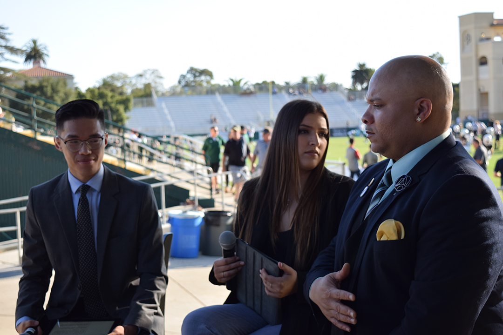

Gameday
A behind the scenes look at Mustang Gameday from start to finish
1 / 3

Mustang Gameday's set with Cal Poly Football head coach Tim Walsh on air as the show's main guest. Alex G. Spanos Stadium, San Luis Obispo, CA. Oct. 26.
2 / 3
Senior journalism major Brian Truong goes through Mustang Gameday's rundown hours before the start of the show. Cal Poly Graphic Arts building, San Luis Obispo, CA. Oct. 26.
3 / 3

Junior journalism major Francisco Martinez assists in setting up the Mustang Gameday set by locking in a JVC camera to a tripod. Alex G. Spanos Stadium, San Luis Obispo, CA. Oct. 26.
3 / 3
A multitude of cables are managed, most of which by the journalism department's broadcast engineer Thomas Morales. Alex G. Spanos Stadium, San Luis Obispo, CA. Oct. 26.
3 / 3

Truong and Martinez make sure graphics and packages are in order for the start of the show, which is less than an hour away. Alex G. Spanos Stadium, San Luis Obispo, CA. Oct. 26.
3 / 3
Morales checks audio levels after all the broadcast equipment is set up. Alex G. Spanos Stadium, San Luis Obispo, CA. Oct. 26.
3 / 3

Truong puts the finishing touches on the show's rundown as sophomore journalism major Mathew Bornhorst and junior journalism major Tony Ernst. Bornhorst and Ernst aid in set up and camera operation for Gameday. Alex G. Spanos Stadium, San Luis Obispo, CA. Oct. 26.
3 / 3

Truong, senior journalism major Sydney Finkel and Mustang Gameday's first guest, Cal Poly play-by-play announcer Veejay Huskey, prepare for an on-air interview. Alex G. Spanos Stadium, San Luis Obispo, CA. Oct. 26.
3 / 3
Veejay answers a question during the interview. "What Sacramento State did to Montana State last week was shocking, I mean, probably one of the most shocking scores I've seen in the Big Sky Conference." Alex G. Spanos Stadium, San Luis Obispo, CA. Oct. 26.
3 / 3
Morales and Martinez watch from the control table as Truong and Sydney prepare to bring Walsh on air. Alex G. Spanos Stadium, San Luis Obispo, CA. Oct. 26.
3 / 3
Walsh sits down with Finkel and Truong to discuss Cal Poly's upcoming match against No. 8 Sacramento State. Alex G. Spanos Stadium, San Luis Obispo, CA. Oct. 26.
3 / 3
Walsh answers his first question of the interview. "It's unfortunate we didn't play the coverage right," Walsh said. "It cost us the football game." Alex G. Spanos Stadium, San Luis Obispo, CA. Oct. 26.
3 / 3
Truong packs up his tripod after the 45 minute show comes to a conclusion. "Dude I'm so hungry," Truong says. Alex G. Spanos Stadium, San Luis Obispo, CA. Oct. 26.
3 / 3
Morales backs the equipment cart out of the stadium before heading back to the Graphic Arts building. Alex G. Spanos Stadium, San Luis Obispo, CA. Oct. 26.
3 / 3
Doors are held open in order to carry the broadcast euipment back into the journalism tech office. The day, which started at noon, is officially over at 5:30 p.m. Cal Poly Graphic Arts building, San Luis Obispo, CA. Oct. 26.